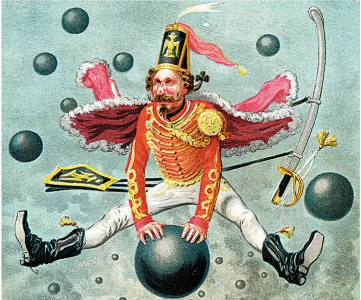

(Sven Franck, ) Giorgia Meloni did not want the spotlight to be stolen from her at the recent Rimini Meeting. Contrary to Mario Draghi pleading for European integration she was championing a Europe of Nations. As if more of the status quo is suddenly the solution.Read the article.
ChatControl: the end of the secrecy of correspondence
(Sven Franck, ) Even if 72% of the European population is against it, total surveillance of our digital communication risks becoming a near reality. Best we end the secrecy of correspondence with it.Read the article.
SOTEU 2026: Cut the sweet talk
(Sven Franck, ) Everything has been said about the White House summit but if one thing is clear after the NATO summit, the US-EU trade deal and last weekend, it's that the EU has some serious introspection to do followed by some equally serious reforming.Read the article.
Fork the EU
(Sven Franck, ) Why not fork the EU? Because whatever your dream of a future European Union, any changes to treaties will require unanimity and there will always be someone saying no. Like in software, the threat of a fork creates leverage.Read the article.
EU Budget: Pennies for the Dollar?
(Sven Franck, ) Yesterday, Commission President Ursula von der Leyen presented the new EU budget (MFF) to be negotiated over the next 24 months with an increase to 1.984 Trillion € or 1.26% of Gross National Income (GNI) - up from 1.13% for the ongoing period.Read the article.
Innovation or Bureaucracy?
(Sven Franck, ) I recently submitted a dossier for the European Defence Fund. Our SME consortium passed the threshold with high grades for innovation. However, another project scored better and since only one project was funded, we found ourselves accepted but sans budget.Read the article.
Motion of Censure: Decommissioning the Commission President?
(Sven Franck, ) Last week a Romanian MEP from the ECR group tabled a motion of censure against Commission President Ursula von der Leyen for her role in the Pfizergate scandal and interference in German and Romanian elections.Read the article.
Border controls are like national parties
(Sven Franck, ) This weekend my green consciousness had me taking the bus from Ljubljana to Munich to catch a direct train to Utrecht. However, reducing exposure to Deutsche Bahn's punctuality does not save travellers from the new German government's paneuropean-domino of illegal border controls.Read the article.
5% Nato spending
(Sven Franck, ) It's Nato summit and Mark Rutte already spoiled the poetic message: We will be spending 5% of GDP on defense. That's significantly more than the 2% members committed to grow their spending until 2024.Read the article.
The case for an EU Foreign Policy Trilogue
(Sven Franck, ) I recently watched Jeffrey Sachs speaking in the EU Parliament and I can only echo the criticism towards the European Union lacking a proper foreign policy.Read the article.
Free movement for citizens or human resources?
(Sven Franck, ) It's Schengen's birthday! On June 14th 1985, the agreement to abolish border controls was signed in Schengen. 40 years later, 29 countries are participating: the EU less Cyprus and Ireland but with Switzerland, Norway, Liechtenstein and Iceland.Read the article.
EU: Open for business?
(Sven Franck, ) I recently watched a US discussion on Trumps tariff roller coaster and the phrase that stuck with me was the US has the ideas, China the manufacturing and Europe... they can only regulate. Read the article.
Why doesn't the EU steal the extreme-right's favorite topic?
(Sven Franck, ) Another day, another snap election. This time, Geert Wilders blew up the Dutch (far-)right coalition over its unwillingness to support his 0-Asylum initiative. All things equal, we will again have to bear through a campaign on... guess what? Immigration. Are there no other urgent topics?Read the article.
40 years of EU brand-building with just a flag?
(Sven Franck, ) Yesterday 39 years ago, on the 29th of May 1986, the European flag was officially inaugurated. Also yesterday, I stumbled over an ad on Facebook from a youth magazine pitching the flag and a European Identity - only to be drowned in comments along the lines of WTF is European identity?Read the article.
National Bureaucrazy
(Sven Franck, ) 9h00 am. Mail from the Slovenian immigration office after waiting for 6 months. Missing proof of health insurance. Ok, but...Read the article.
Should the EU break social media?
(Sven Franck, ) The public consultation on Europe's future Democracy shield is about to close and albeit a high signal to noise ratio courtesy of an initiative from Slovakia, making our democracies more resilient is becoming an urgency.Read the article.
Yay, 9th of May
(Sven Franck, ) Yay, it's Europe day! 🇪🇺 A while ago, I wrote that everybody is proudly European for a day before going back to national politics. Not much has changed.Read the article.
Where the f… is Europe?
(Sven Franck, ) Stock markets around the world are in maga-red after US president Trump slapped tariffs on the world before heading to a Nero-esque weekend of golf. And while China was quick to announce quid-pro-quo tariffs, the European Union does… nothing. Business as usual? Read the article.
How Greenland convinced Santa to change his outfit to European blue
(Sven Franck, ) Greenland stood up the Vance family because they were convincing Santa to switch his outfit from Maga-red to EU-blue. With a green light from the North Pole, a petition has been launched to request chocolate manufacturers and retailers to jump on the bandwagon. Read the article.
Tariffs: Why a zero-sum game?
(Sven Franck, ) The United States and Europa have started imposing tariffs on each other and we should ask what is the EU’s end game, because "an eye for an eye" should not mean that Europe must poke out its eyes just because America does it. Read the article.

Fact or Fiction?
(Sven Franck, ) Credibility and reliability are amiss in the world today. The more chaos Trump creates, the more Europe has to become a defender of not only its frontiers, but also of facts and science over fiction and lies. Read the article.
Out of options? Nope. Vote Volt.
(Sven Franck, ) Since Maastricht, governments of the right and left neglected to advance the European project and to make the EU the federal Institution, which we would need today. Why should it be any different after 23.02.?Read the article.
MEGA, MAGA, GAGA?
(Sven Franck, ) The extreme-right spent years framing migration as their topic to win elections. Why not copy the strategy and use the Trump presidency to question the "American way of life" and the extreme-right’s true objectives?Read the article.
Bananas? Bent. Lids? Fixed. Social media: you're next!
(Sven Franck, ) The negative effects of social media far outweigh its benefits even before Donald Trump took office. Just like with junk food, the European Commission would have the regulatory means to protect citizens and make the European online world a better place. The time is now.Read the article.
Why California should join the EU
(Sven Franck, ) The European Union should respond to Donald Trump’s imperialist ambitions not only by rattling its regulatory toolbox. A united and political Europe would also find other ways to sway public opinion at home and abroad.Read the article.
Alice in Wonderland
(Sven Franck, ) Let’s journey into a wonderland to find out if the AfD's slogan "Alice for Germany" is just a sham for "Alice in Wonderland".Read the article.
European wishes beyond plastic-lids
(Sven Franck, ) Staring at the EU's self-congratulatory post of gifting us the USB-c plug and while pulling on the plastic-lid clumsily attached to my water bottle, I cannot help but wonder: are these all of your latest achievements, Europe?Read the article.
2024
Why a vote with conviction is useful
(Sven Franck, ) On June 9th, I will vote for Europe-Territoires-Écologie because because it's the only chance the left will have to build a majority in 2027 and because Volt France is part of it.Read the article.
A new hand to build a new house of cards?
(Sven Franck, ) The European elections offer a chance to break the deadlock of our political system - by voting for small parties such as Volt France.Read the article.
Let's be frank: Immigration is invaluable for our economy
(Sven Franck, ) Our economy depends on immigration and our diversity could be one of France's greatest assets.Read the article.
SOTEU 2023 - Travelling without moving
(Sven Franck, ) In her SOTEU 2023 speech, Ursula von der Leyen touched on a plethora of subjects, but proposed only superficial measures instead of advancing the European project.Read the article.
Why not call for a vote of non-confidence against the European Commission?
(Sven Franck, ) The recent appointment of Fiona Scott Morton, an American citizen and lobbyist for Apple, Amazon and Microsoft, as Chief Economist of the European Commission's Directorate-General for Competition, will make the far right very happy across Europe in the 2024 European elections.Read the article.
Why are there no avengers in politics ?
(Sven Franck, ) A year before the European elections and with most eyes already turned towards 2027, French politics is once again engaged in its perpetual search for the equivalent of the voice - the personality who will unite the country and become its quintessential leader - in theory.Read the article.


![The United States of Europe [Graphic par Midjourney]](../img/FR-Graphics-European-Union-Of-America.webp)